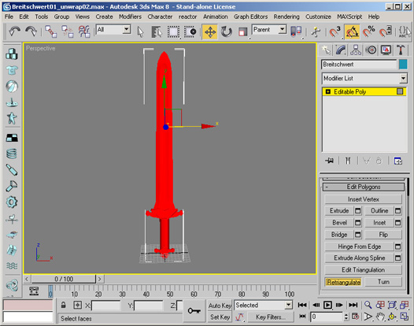
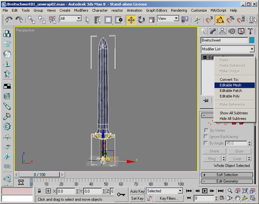
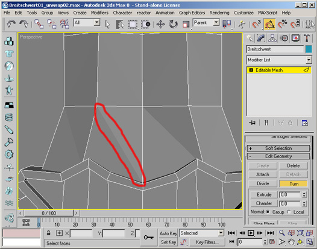
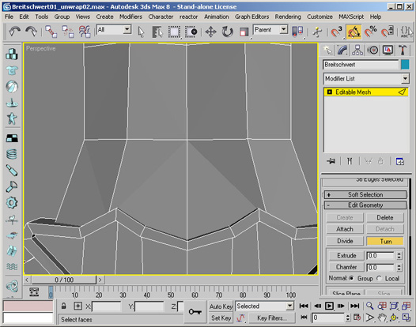
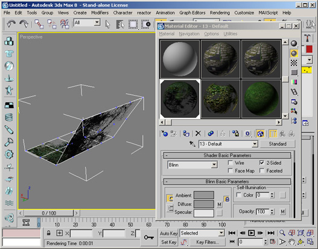
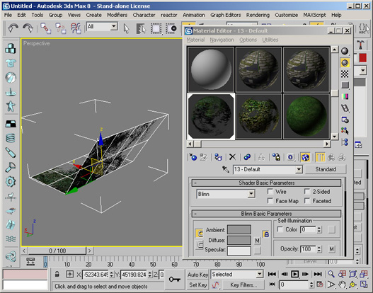
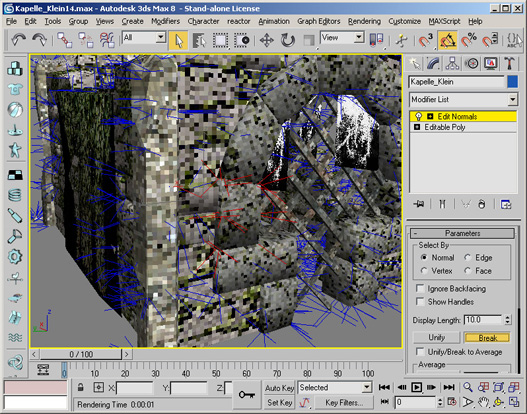

Mesh Modelling with 3DS MAX
- Remove useless polygons
- Generate Normalmaps
- Flip edges
- Remove two sided materials
- Fix normals
- Merge to single mesh
Remove useless polygons

Generate Normalmaps
Generate Normalmaps for appropriate detail geometry

Flip edges
Flip/turn edges to match topology.
Retriangulation of the mesh is a good starting point. Works only with Editable Polys

Convert to Editable Mesh

Flip/Turn individual edges
 
Remove two sided materials
Two sided materials are not supported and have to be replaced by an inverted copy of the affected faces.


Used operations
- Disable 2-Sided checkbox material property
- Select Mesh
- Clone
- Select clone
- Modifier: Polygon mode, select affected polygons and flip normals
- Delete unused faces from clone
- Attach clone to original
- Modifier: Vertex mode and weld vertices

Fix normals
Fix normals to match topology. Use hard edges for cubic and soft edges for curved surfaces.

Used operations
- Select Mesh
- Normal Modifier
- Select affected normals and break them
- Fine tune normals manually


Merge to single mesh
Merge groups of objects to a single mesh for optimal in-game performance.

Used operations
- Select one object
- Modifier: Object mode and attach list
- Select objects to merge

Links
- Alias Maya
- Photoshop Alpha Channel Tools v0.0.2
Date: 09.07.2007 Size: 278KB - Highend 3D
- 3drender.com - Texture Resources
- cgtextures
- textures.forrest